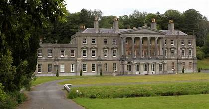

Cilmin Droed Ddu
 Edrych draw am Glynllifon
Edrych draw am Glynllifon
Roedd Cilmin yn ffermwr cyffredin oedd yn mwynhau hela a physgota yn llawer mwy na
ffermio ac yn breuddwydio rhyw ddiwrnod y cai ddigon o arian fel na fyddai’n rhaid iddo
 Arfbais Glynllifon
weithio ar y fferm. Un noson aeth Cilmin i gyfarfod gŵr hysbys oedd eisiau trechu bob gwrach
yn yr ardal. Penderfynodd y ddau y gallent helpu ei gilydd ond i Cilmin fod yn ddewr.
Arfbais Glynllifon
weithio ar y fferm. Un noson aeth Cilmin i gyfarfod gŵr hysbys oedd eisiau trechu bob gwrach
yn yr ardal. Penderfynodd y ddau y gallent helpu ei gilydd ond i Cilmin fod yn ddewr.
Roedd criw o wrachod yn byw ar fynyddoedd yr Eifl oedd yn melltithio’r ardal, gwneud i’r
corddi fethu a lladd anifeiliaid a chnydau. Roedd eu holl swynion wedi eu cofnodi mewn llyfr
mawr oedd yn cael ei gadw dan garreg wen mewn ogof ar gopa ucha’r Eifl. Petai Cilmin yn
cipio’r llyfr byddai diwedd ar gastiau’r gwrachod. Byddai’n rhaid iddo gipio’r llyfr pan fyddai’r
bwystfil oedd yn ei warchod yn cysgu. Byddai’n rhaid iddo hefyd groesi’r afon fechan wenwynig
wrth droed yr Eifl. Roedd y gwrachod a’r bwystfil ofn yr afon am eu bywyd ac ofn mynd yn agos
ati. Cafodd Cilmin fenthyg ceffyl y gŵr hysbys ac i ffwrdd ag o am yr Eifl. Gwelodd yr afon
wenwynig yn syth oherwydd bod y tir o’i chwmpas yn ddiffaith a’r pridd yn ddu. Cliriodd y ceffyl
Plas Glynllifon
yr afon gydag un llam gosgeiddig. Clymodd y ceffyl wrth goeden a chychwyn cerdded am y
copa. Toc, clywodd chwerthin gwallgof a lleisiau cras yn llafarganu. Sleifiodd heibio a chamu’n
fras am y copa. Uwch ei ben gwelodd geg ogof fawr. Aeth ar ei gwrcwd a chlustfeinio. Clywodd
sŵn anadlu dwfn a chwyrnu yn dod o gyfeiriad yr ogof – roedd y bwystfil yn cysgu! Sleifiodd i’r
ogof a gweld yr anghenfil drewllyd oedd o leiaf ddwywaith mwy na’r dyn talaf, yn cysgu a’i
bawen ar garreg wen. Llwyddodd Cilmin i symud y garreg yn ofalus heb styrbio y bwystfil a
gwelodd y llyfr hud. Roedd ei gloriau aur a’r meini gwerthfawr a osodwyd ynddo yn disgleirio.
Plygodd a chodi’r llyfr. Wrth gropian am geg yr ogof tarodd ei droed yn erbyn carreg a deffrodd
y bwystfil yn syth a chychwyn rhedeg ar ȏl Cilmin. Rhedodd nerth ei draed i lawr y mynydd a’r
bwystfil ar ei ȏl. Erbyn iddo gyrraedd ei geffyl gwelodd bod un o’r gwrachod dieflig yn gafael yn
 Mynedfa i Barc Glynllifon
y ffrwyn felly doedd dim posib iddo ddianc ar hwnnw. Rhedodd Cilmin am ei fywyd a phan
gyrhaeddodd yr afon wenwynig doedd ganddo fawr o ddewis ond neidio drosti. Glaniodd ei
droed dde yn ddiogel ond oherwydd pwysau y llyfr hud, llithrodd ei goes chwith i’r dŵr hyd y
pen-glin ac er iddo ei thynnu o’r dŵr yn syth, teimlai hi yn mynd yn ddiffrwyth yn y fan a’r lle.
Mynedfa i Barc Glynllifon
y ffrwyn felly doedd dim posib iddo ddianc ar hwnnw. Rhedodd Cilmin am ei fywyd a phan
gyrhaeddodd yr afon wenwynig doedd ganddo fawr o ddewis ond neidio drosti. Glaniodd ei
droed dde yn ddiogel ond oherwydd pwysau y llyfr hud, llithrodd ei goes chwith i’r dŵr hyd y
pen-glin ac er iddo ei thynnu o’r dŵr yn syth, teimlai hi yn mynd yn ddiffrwyth yn y fan a’r lle.
Ar ôl dychwelyd o’r Eifl efo’r llyfr hud llwyddodd y gŵr hysbys i ddadwneud swynion dieflig y gwrachod a daeth Cilmin yn ddyn cyfoethog oherwydd yr aur a’r meini gwerthfawr oedd yng nghlawr y llyfr. Adeiladodd blasty iddo’i hun ac mae coes chwith Cilmin, oedd bellach yn ddu fel y glo, i’w gweld ar arfbais teulu Glynllifon.